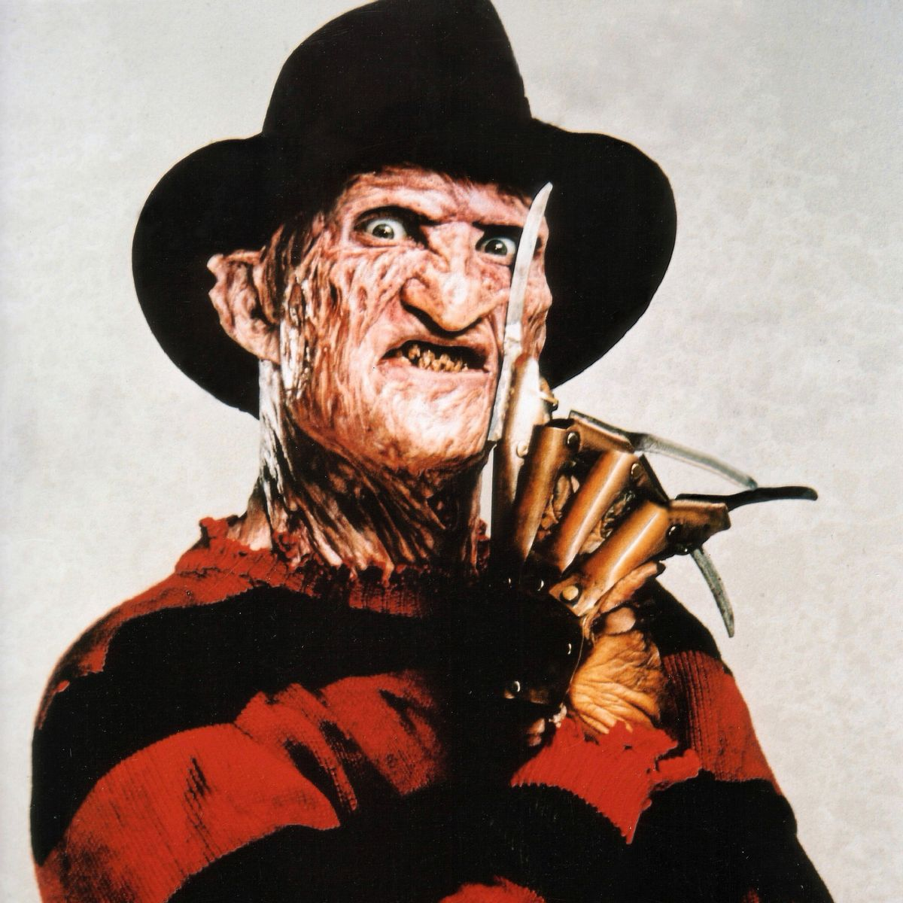
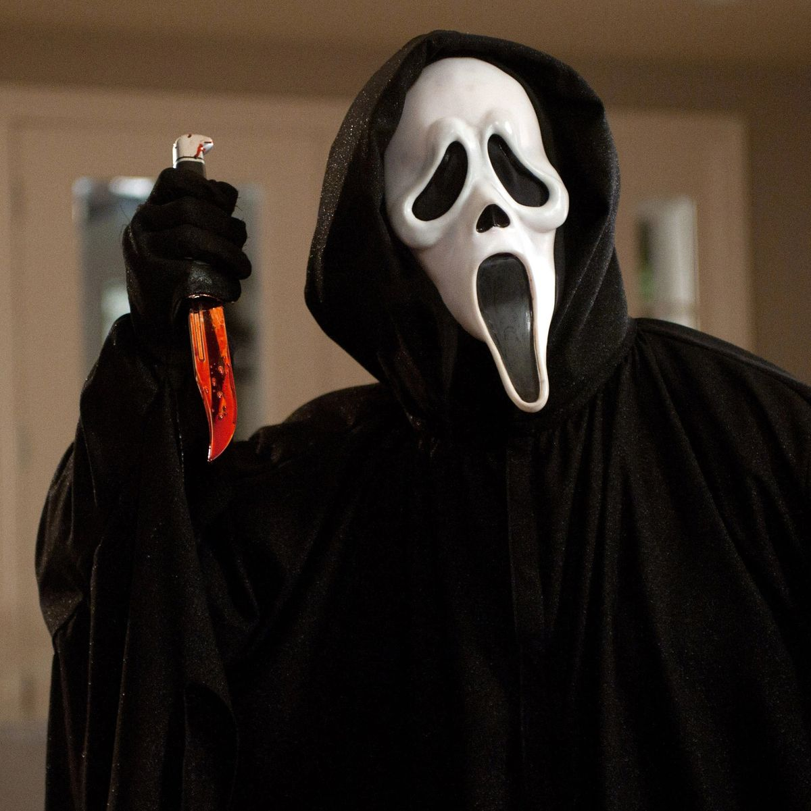

"Death has come to your little town, Sheriff." - Dr Loomis
Michael Myers is a fictional character from the slasher film series Halloween. He first appears in John Carpenter's Halloween (1978) as a young boy who murders his elder sister, Judith Myers. Fifteen years later, he returns home to Haddonfield, Illinois, to murder more teenagers. It is assumed that Myers posseses some degree of supernatural ability, as he is seen surviving a significant amount of ordinarily lethal injuries. However, in the movie Halloween Ends (2022), Myers is killed for good via industrial metal shredder. Michael Myers appears in all of the Halloween films excluding the standalone Halloween III: Season of the Witch, although he is briefly seen on a television advertisement for the original film. Myers has also appeared in expanded universe novels and comic books.
Freddy Krueger
"Whatever you do... don't fall asleep." - Nancy Thompson

Freddy Krueger is a fictional character and the primary antagonist in the A Nightmare on Elm Street film series. He was created by Wes Craven and made his debut in Craven's A Nightmare on Elm Street (1984) as the malevolent spirit of a child killer who had been burned to death by his victims' parents after evading prison. Krueger goes on to murder his victims in their dreams, causing their deaths in the real world as well. In the dream world, he is a powerful force and seemingly invulnerable. However, whenever Freddy is pulled back into the real world, he has normal human vulnerabilities and can be destroyed. He is commonly identified by his burned, disfigured face, dirty red-and-green-striped sweater and brown fedora, and trademark metal-clawed, brown leather, right hand glove.
Ghost-face
"What's Your Favorite Scary Movie?" - Ghostface

Ghostface is a fictional identity that is adopted by the primary antagonists of the Scream franchise. He is mute in person but voiced over the phone by Roger L. Jackson, regardless of who is behind the mask (as all killers use a voice changer utilizing that exact voice, starting in person with Scream 2). The disguise has been adopted by various characters in the movies and in the third season of the television series. Ghostface first appeared in Scream (1996) as a disguise used by teenagers Billy Loomis (Skeet Ulrich) and Stu Macher (Matthew Lillard), during their killing spree in the fictional town of Woodsboro. Though each iteration of Ghostface is human, they often exhibit extreme durability against physical harm, high levels of physical strength, and an almost supernatural stealth ability, able to appear and disappear in seemingly impossible situations.